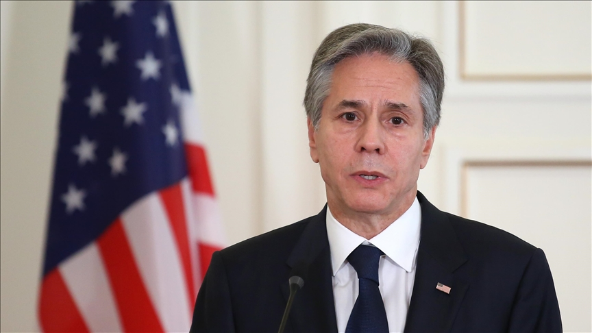

США вже бачать наслідки зупинення допомоги Україні на полі бою - Блінкен

Ситуація із припиненням поставок американської допомоги Україні уже певним чином позначилась на ситуації на полі бою, повідомив держсекретар США Ентоні Блінкен.
Пряма мова держсекретаря США: "Наразі у нас закінчилась допомога, яку ми надавали Україні, і ми навіть бачимо деякі свідчення того, що це означає на полі бою".
Деталі: Він підкреслив, що поточне фінансування потреб України важливе як з боку США, так і з боку партнерів по НАТО. І те, що витрати на допомогу Україні розподіляються між усіма союзниками, має стати чітким посланням американському Конгресу, який має схвалити новий запит на фінансування.